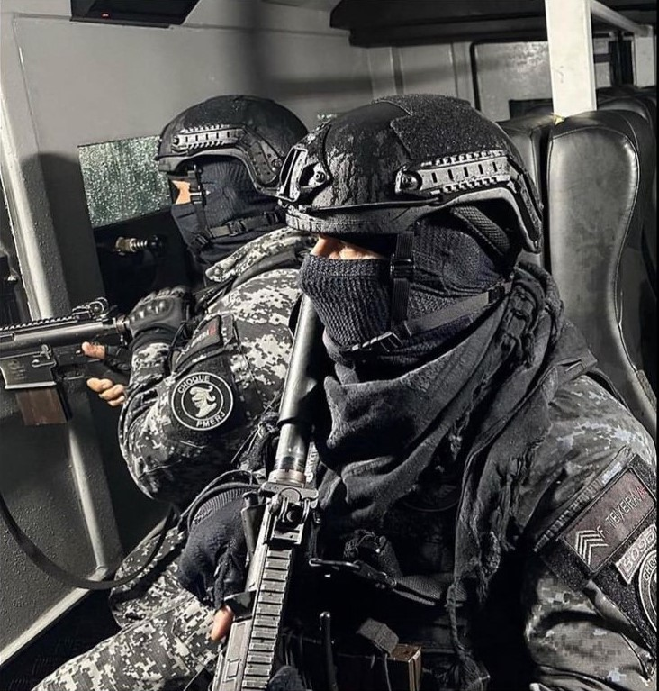
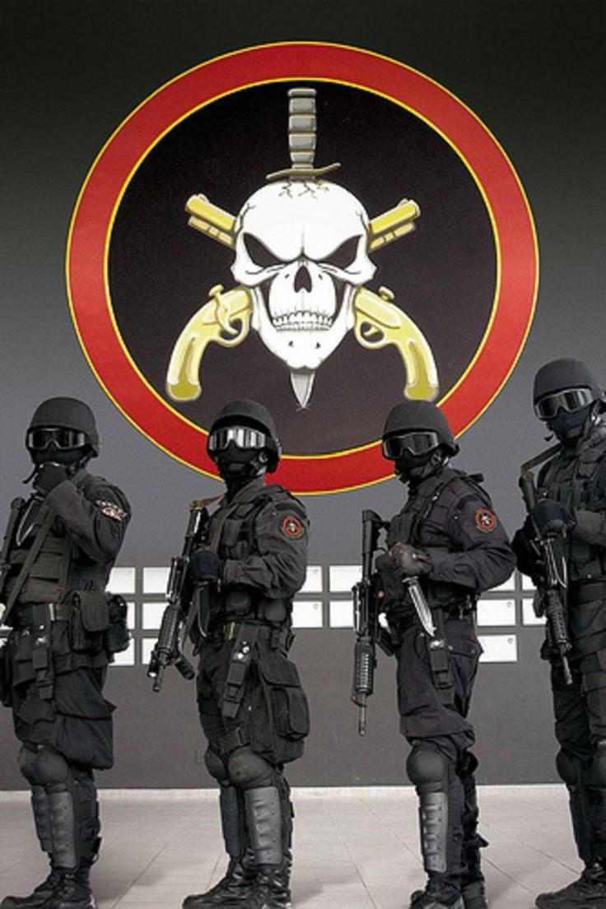
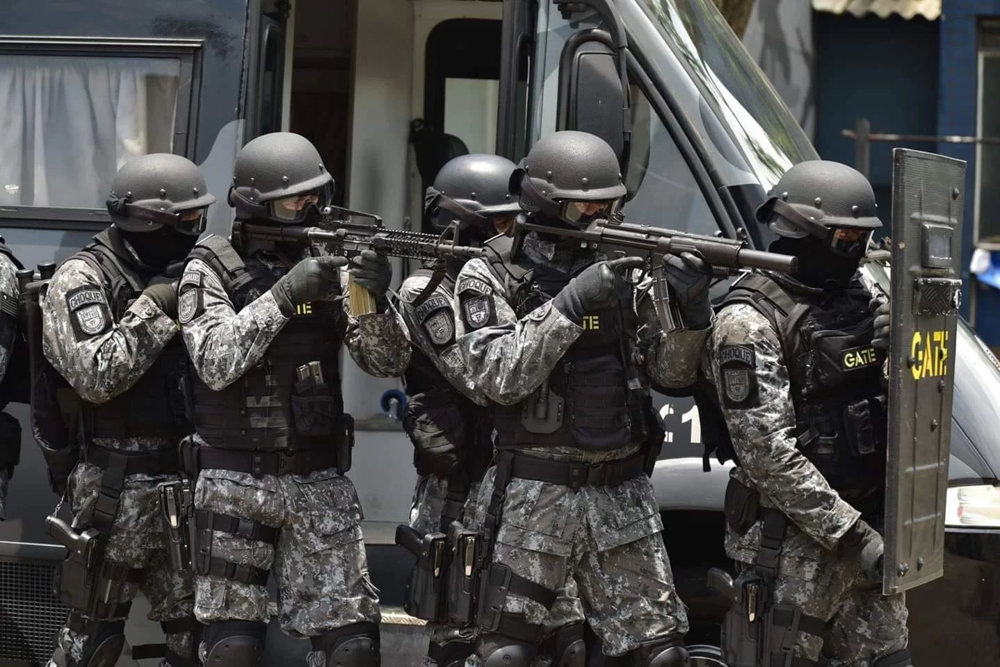
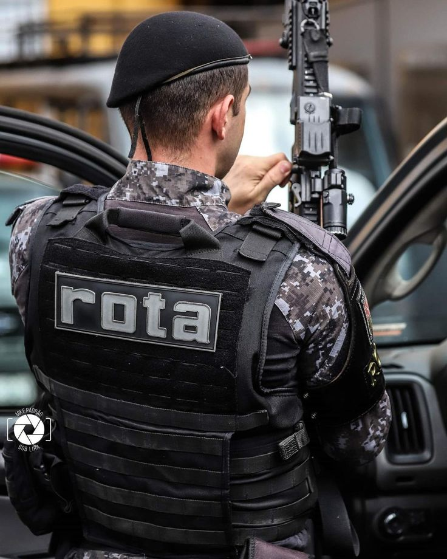

Sobre a Polícia Militar
A Polícia Militar (PM) é a força de segurança pública responsável pela preservação da ordem e policiamento ostensivo em todo o Brasil. Sua função é garantir a segurança dos cidadãos, realizando patrulhamento, atendendo ocorrências via 190 (Rádio Patrulha - viaturas no dia a dia) e combatendo o crime. Dentro da PM, existem os Grupos de Operações Especiais, como o BOPE, CHOQUE e o GATE. Essas são unidades de elite, formadas por policiais altamente treinados para lidar com situações de alto risco, como resgate de reféns, combate a criminosos perigosos e desativação de explosivos. Eles representam a resposta mais especializada da PM para as ameaças mais graves.
Requisitos para Ingresso :
- 📌 Ensino médio completo;
- 🎯 Idade entre 18 e 30 anos (pode variar por estado);
- 📏 Altura mínima: 1,60m (mulheres) e 1,65m (homens);
- 📝 Aprovação em concurso público estadual;
- 🏋️ Testes físicos, psicológicos e médicos;
- 🚗 Carteira de Habilitação (CNH);
- 🎓 Curso de formação na Academia da Polícia Militar.

CHOQUE

BOPE

GATE

ROTA